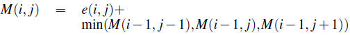
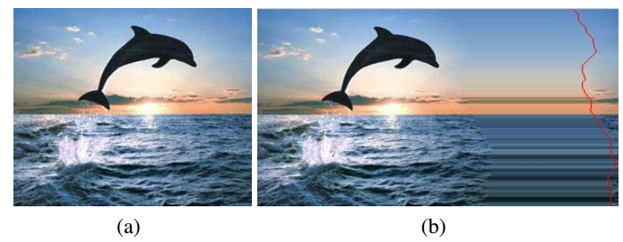
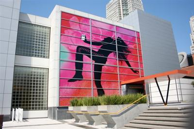
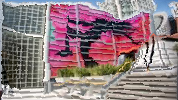
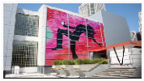

Image Retargeting
We implemented the Content-Aware Image Resizing algorithm based on seam-carving proposed by Shai Avidan and Ariel Shamir in their 2007 SIGGRAPH paper Seam Carving for Content-Aware Image Resizing. The online demo is accessible here.
Gradient Computation
Before we get to how to resize an image with aware of its content, we first need to figure out how to compute the gradient of an image. According to paper, the gradient of an image


")
 = (r,g,b)")
 \right | + \left | \frac{\partial I}{\partial y} (i,j) \right |")
 at
by inspecting its neighborhood values:
at
by inspecting its neighborhood values:
, I(x+1, y), I(x,y-1), I(x,y+1)")
 - I(x-1,y)| / 2") as the partial derivative in
as the partial derivative in  direction, and
direction, and  - I(x,y-1)| / 2") as the partial derivative in
as the partial derivative in  direction. Note that is is computing the magnitude of a difference vector, thus it is computed in gradient.js by
direction. Note that is is computing the magnitude of a difference vector, thus it is computed in gradient.js by
/*
Compute color vector distance.
*/
function colorDistance(pixels, p1, p2) {
var rDiff = pixels[p1] - pixels[p2];
var gDiff = pixels[p1 + 1] - pixels[p2 + 1];
var bDiff = pixels[p1 + 2] - pixels[p2 + 2];
return Math.sqrt(rDiff * rDiff + gDiff * gDiff + bDiff * bDiff);
}
 is
is
 - I(x,y)|}{h}")
 - I(x-h,y)|}{2h}")
 we can get is
we can get is  , so that's where our approximation came from.
, so that's where our approximation came from.
Seam Carving
A seam is a vertical or horizontal trail of connected pixels where only one pixel is taken from each row/column. For example a vertical seam in is defined by a list of coordinates ") where
where
is strictly increasing.
for all
.
The cost of a seam is defined by the sum of the energy of each coordinate contatined in the seam. The energy function we used is simply the gradient we defined above.
The seam with the lowest energy is the seam that contains the lowest information in the image, hence removing it would maintain the useful information in our image. This is the essense of the content-aware image resizing idea. To compute the seam with the minimum seam cost, we use the following dynamic programming algorithm defined in the paper.

Reduce Image Size
To make the image smaller, we can just remove the minimum cost seam we obtained, which would essentially reduce either our image width or height by 1 depending on whether the seam is vertical or horizontal. Then we can repeat this process to find the next optimal seam for removal. As we continue this effectively resizes the image.
When both width and height of an image changes, we need to figure out an order for which we remove the horizontal and vertical seam to make sure the process is still correct. The paper presented a dynamic programming algorithm to obtain this optimal ordering. From our understanding, what that algorithm does is simply compare the seam cost of the optimal vertical seam and the optimal horizontal seam, then remove the one with smaller cost. We present an example produced from our implementation below.

Enlarge Image
The idea for image enlargement is similar to image reduction. This time we would add the seams with minimum cost since those seams contain the least information, hence adding them would produce the least artifact in enlarging the image.
However, if we always choose to add the seam with least cost, then the enlarged image would produce a stretching artifact. We can see this by the example presented in the paper below:

To fix this, the authors proposed that instead of adding the seam with minimum cost each time, we would add seams with minimum cost. We present an example produced from our implementation below. The seam is duplicated by averaging the pixels in the seam with its left and right (or up and down) neighbors.
Limitations of Seam Carving Image Retargeting
Consider the image below.
When we applied the resizing algorithm presented in the paper with optimal-ordering seam removal, the result is below.
We can see the straight lines are not maintained. This artifact is also visible for faces.
The paper also noted such artifacts. The authors presented a solution by allowing users to choose regions where posivie/negative energy is added to the energy calculation so that the algorithm would make sure that area would not change in resizing.
In our implementation we did a different workaround without user intervention. Similar to the idea in content amplification below, we would first scale the original image to either the target width or height, whichever dimension changed smaller, then we use seam-carving to resize the other dimension left. The result it presented below:

Content Amplification
Similar to the limitation discussed above, content amplification works by first scaling the image up, then using seam carving to reduce the image size back to the original. We present an example below.
Performance
In our js demo, you can see the application runs pretty slow. The time grows worse as the image gets larger. We have did a benchmark on our js code, and we found out it is not the dynamic programming algorithm or the gradient computation that's taking up the most time, but it's the shifting of the whole image after removing one seam that takes up the most time. Unfortunately we couldn't find a way to overcome this in our implementation.
As an alternative, we provide a Matlab implementation of seam-carving here, interestingly the Matlab implementation runs much faster.